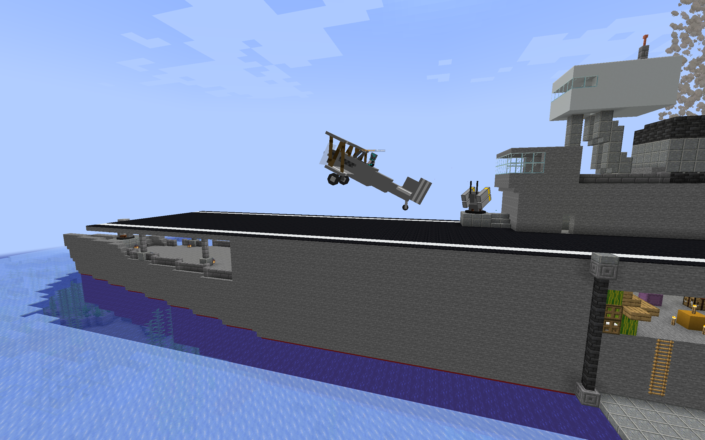
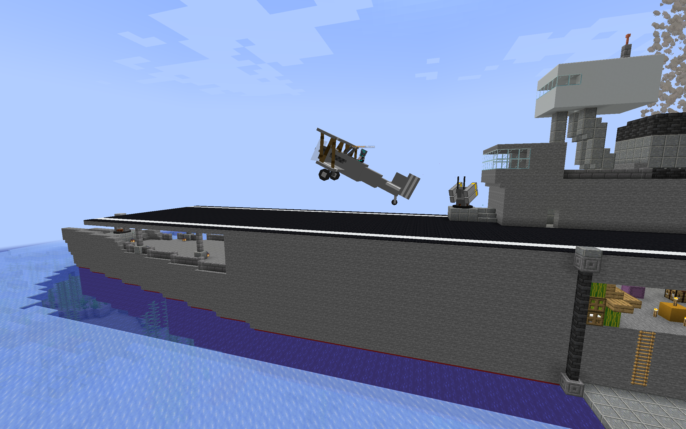

For the past seven years, I have been developing expansive survival experiences in Minecraft using only in-game commands. PCE∅ is the ninth and final entry in this series, and my most ambitious project yet. In this adventure, players explore nine diverse dimensions, each hiding three Null Shards. Beyond the base game, PCE∅ introduces a deep Technology Tree and Runic Magic system, offering players a satisfying blend of exploration, strategy, and progression.
PCE∅ Datapack Server
An Expansive Server-Compatible Vanilla Datapack

 

Design & Development
(REPLACE ME)
Community Response
(REPLACE ME)